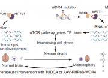
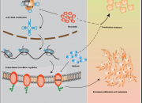
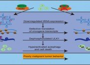
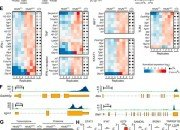
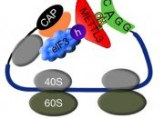
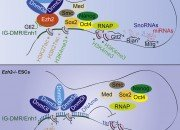
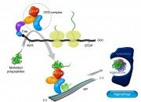
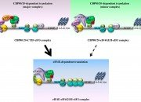
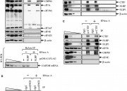
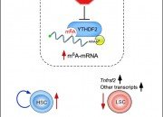

RNA GENOMICS LAB
Publication

Pathogenic mechanism and therapeutic intervention of impaired N7-methylguanosine (m7G) tRNA modification

NAT10-mediated ac4C tRNA modification promotes EGFR mRAN translation and gefitinib resistance in cancer
Wei Wei, Shuishen Zhang, Hui Han, Xiaochen Wang, Siyi Zheng, Zhaoyu Wang, Chunlong Yang, Lu Wang, Jieyi Ma, Siyao Guo, Juan Wang, Lianlian Liu, Junho Choe, Shuibin Lin
, Cell Reports, July 2023
N7-methylguanosine tRNA modification promotes esophageal squamous cell carcinoma tumorigenesis via the RPTOR/ULK1/autophagy axis.

The mRNA m6A reader YTHDF2 suppresses proinflammatory pathways and sustains hematopoietic stem cell function

mRNA circularization by METTL3–eIF3h enhances translation and promotes oncogenesis
Junho Choe, Shuibin Lin, Wencai Zhang, Qi Liu, Longfei Wang, Julia Ramirez-Moya, Peng Du, Wantae Kim, Shaojun Tang, Piotr Sliz, Pilar Santisteban, Rani E. George, William G. Richards, Kwok-Kin Wong, Nicolas Locker, Frank J. Slack, and Richard I. Gregory

PRC2 Is Required to Maintain Expression of the Maternal Gtl2-Rian-Mirg Locus by Preventing De Novo DNA Methylation in Mouse Embryonic Stem Cells

Misfolded polypeptides are selectively recognized and transported toward aggresomes by a CED complex
Joori Park, Yeonkyoung Park, Incheol Ryu, Mi-Hyun Choi, Hyo Jin Lee, Nara Oh, Kyutae Kim, Kyoung Mi Kim, Junho Choe, Cheolju Lee, Ja-Hyun Baik, and Yoon Ki Kim

Translation Initiation on mRNAs Bound by Nuclear Cap-binding Protein Complex CBP80/20 Requires Interaction between CBP80/20-dependent Translation Initiation Factor and Eukaryotic Translation Initiation Factor 3g
Junho Choe, Nara Oh, Sungjin Park, Ye Kyung Lee, Ok-Kyu Song, Nicolas Locker, Sung-Gil Chi, Yoon Ki Kim
, Journal of Biological Chmeistry, MAY 2012
Rapid degradation of replication-dependent histone mRNAs largely occurs on mRNAs bound by nuclear cap-binding proteins 80 and 20
Junho Choe, Kyoung Mi Kim, Sungjin Park, Ye Kyung Lee, Ok-Kyu Song, Min Kyung Kim, Byung-Gil Lee, Hyun Kyu Song, and Yoon Ki Kim

Targeting the RNA m6A Reader YTHDF2 Selectively Compromises Cancer Stem Cells in Acute Myeloid Leukemia